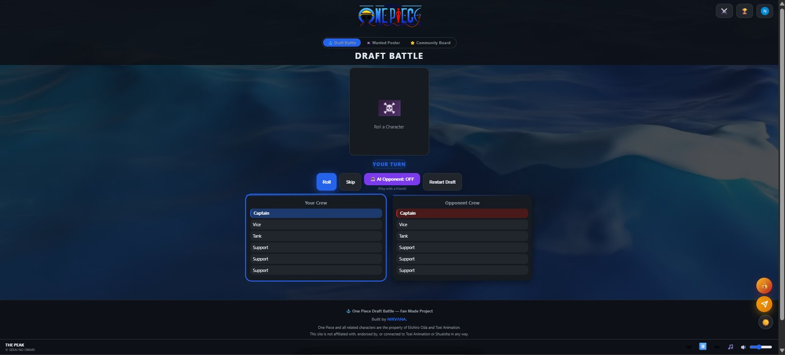
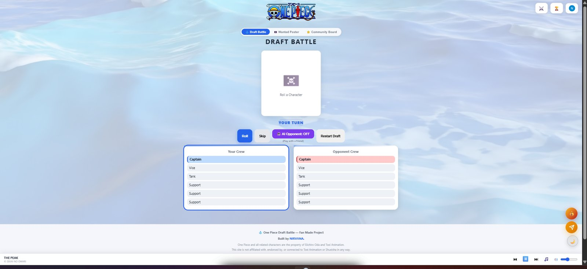
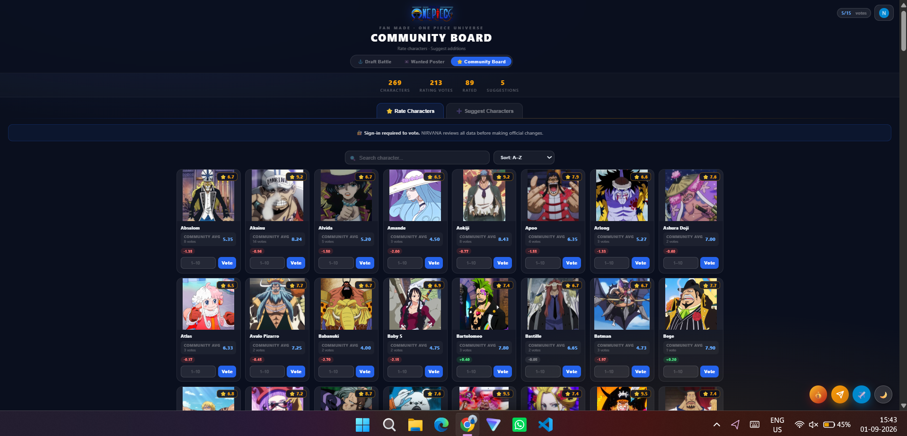
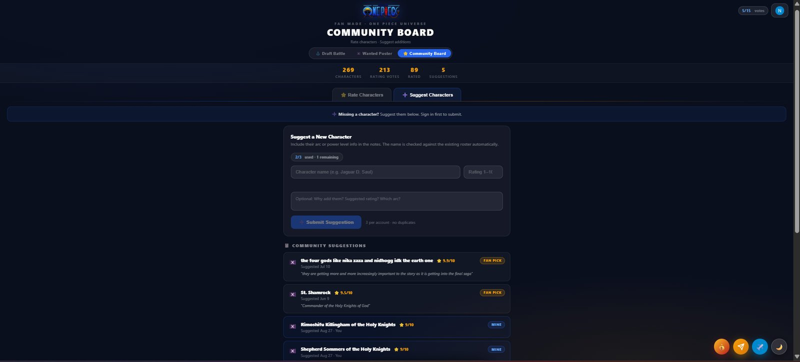
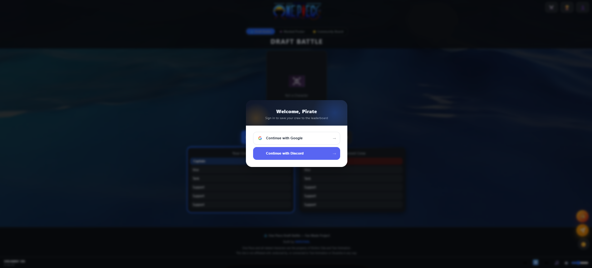
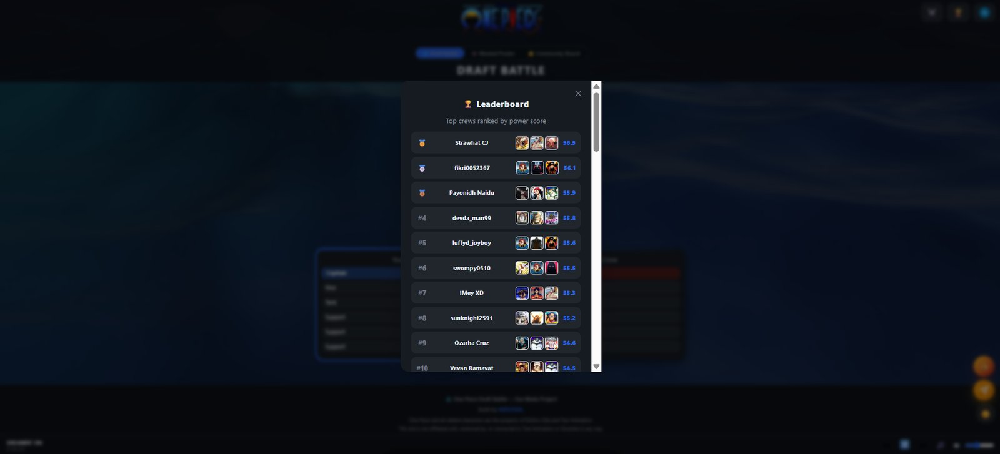
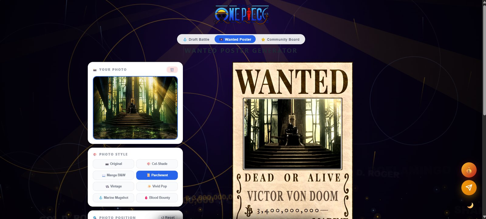
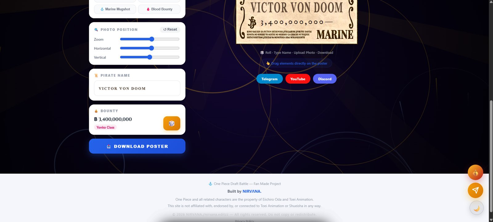

The draft
Two crews take turns rolling random characters and slotting them into roles — Captain, Vice, Tank, three Support. Every character carries a community-sourced power rating, so each pick is a real trade-off: bank on a strong captain roll, or hold out for a better support line. Play against a friend, or flip on the AI opponent and go solo — it drafts with its own role priority based on the strength of what it rolls, so it's not just picking at random either.


Turn-based, role-aware
Slots are locked to their role — a rolled character only fills an empty seat that fits, and the UI colors each crew independently so it's always clear whose turn is whose.
Score, then screenshot
Once both crews are full, the game tallies total and average power, declares a winner, and lets you save the result as an image — styled to match whichever theme you're on.
Ratings, crowdsourced
Every rating in the pool is community-tuned rather than something I set once and left alone. Signed-in players vote on existing characters and pitch new additions — I review every suggestion before it touches the live pool, so the numbers stay fair without me guessing alone at 269 characters' worth of power levels.


Sign in, get ranked
Google or Discord sign-in saves your best crew to a live leaderboard, ranked by total power score. No account needed to play a round — it's only asked for once you've got a crew worth saving, and signing in mid-draft doesn't lose your progress.


Your own wanted poster
A second tool, built alongside the draft game: upload a photo, pick a print style, and it's laid onto a Marine-issue wanted poster — bounty, alias, the works. Every element can be dragged directly on the poster to reposition it before downloading.


Under the hood
No framework — the whole front end is hand-written HTML, CSS, and JavaScript. Accounts and the leaderboard run on a hosted database with OAuth sign-in; the site itself deploys straight from source on push. Screenshots are generated client-side from the actual DOM, not a server render.
- HTML / CSS / JS
- Supabase (auth + data)
- Cloudflare Pages
- Google & Discord OAuth
- html2canvas
- Responsive, mobile-first
Built and run solo — design, gameplay logic, backend integration, bug fixing, and deployment, all one person. The NIRVΛNA channel is the same project, one level up.